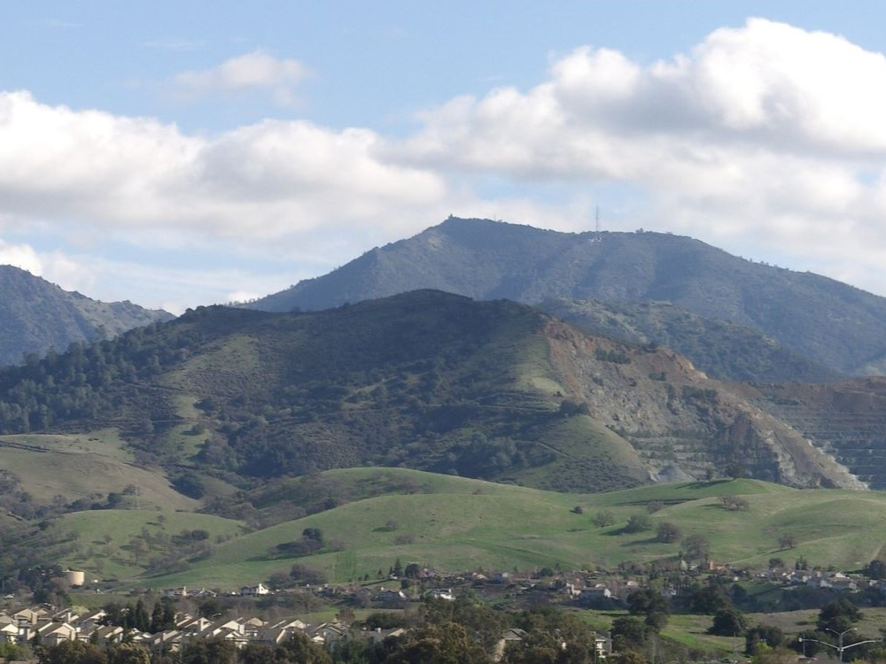
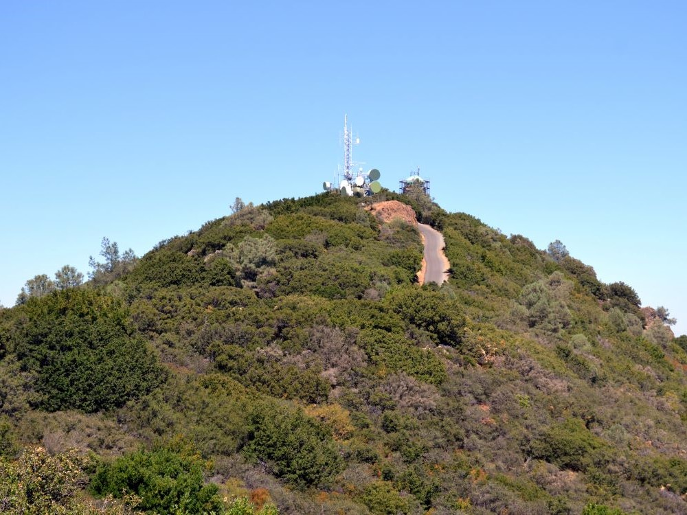
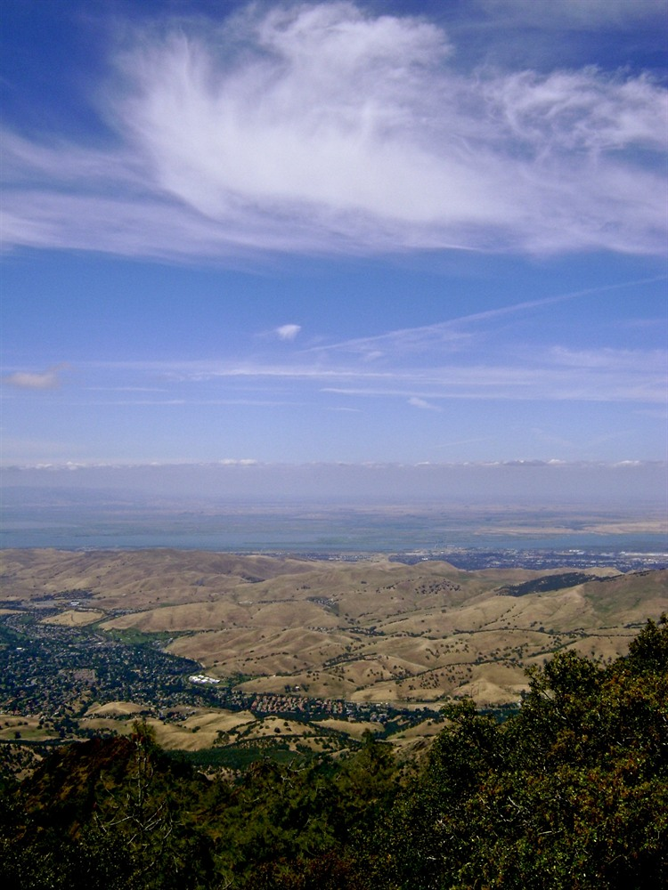
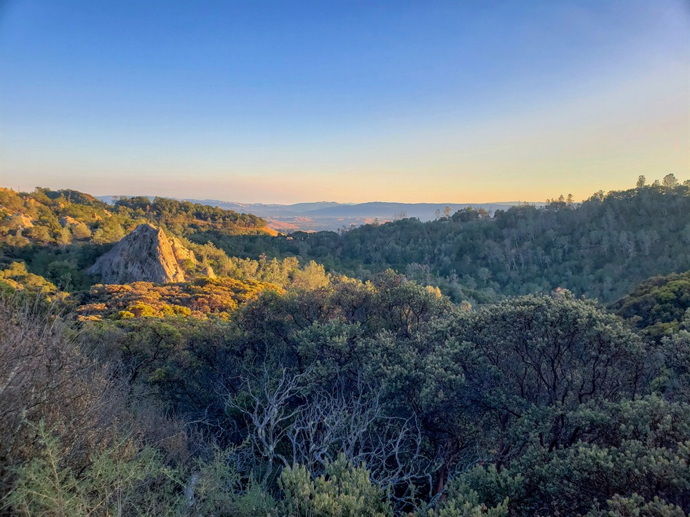
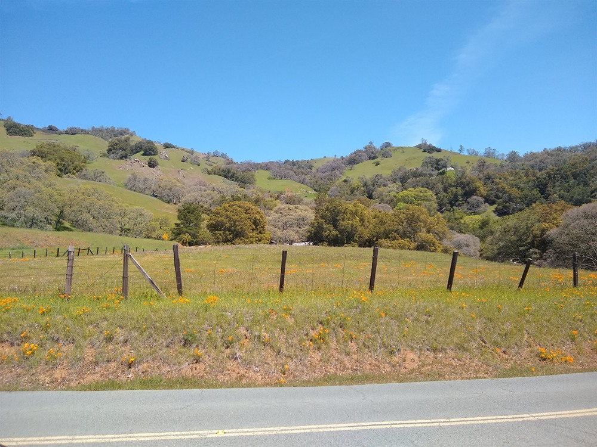
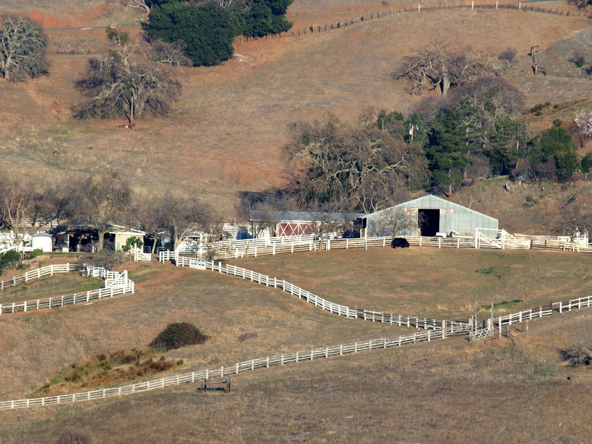
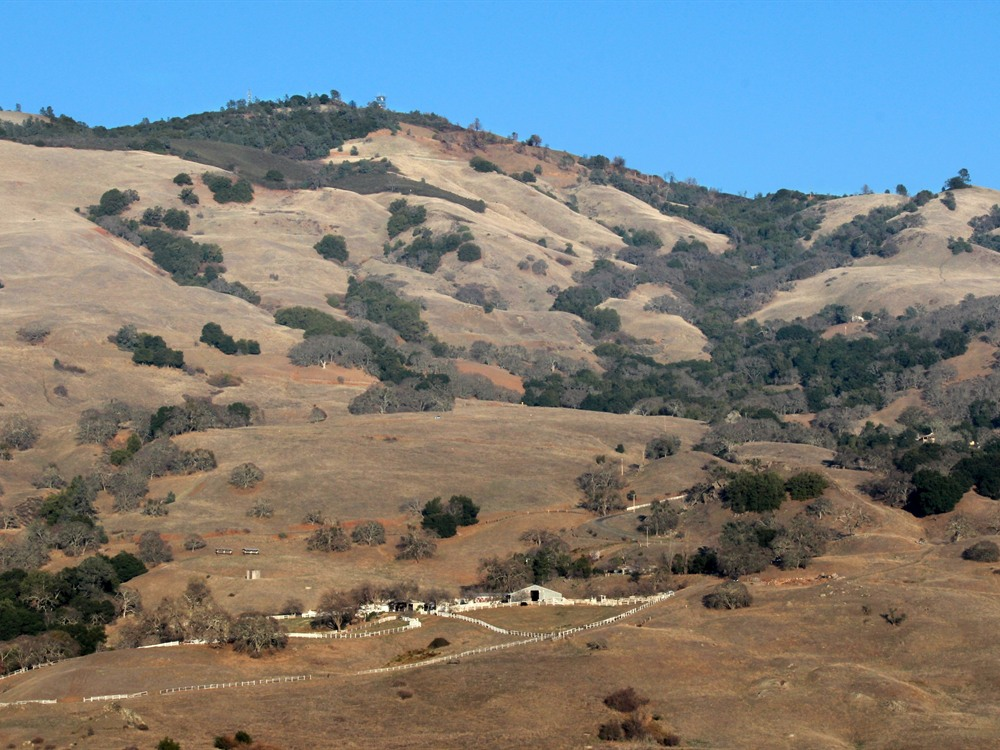
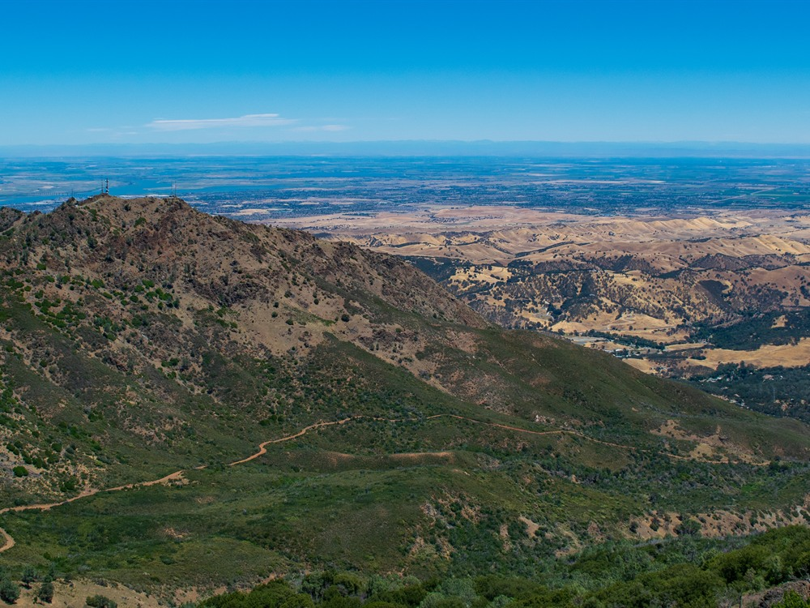
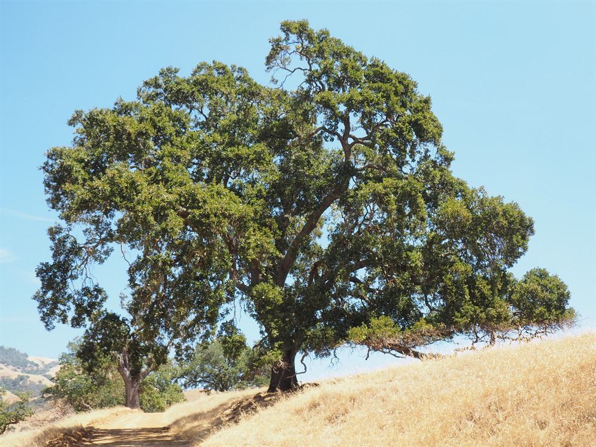

Prominent mountain park offering panoramic summit views, diverse hiking trails, and geological features across thousands of acres of preserved wilderness.
General Information
Summit Visitor Center: 10am to 4pm
Mitchell Canyon & Macedo Ranch Entrances: $6 per vehicle
Senior Discount: $1 off
Walk-in and bike access: Free
How to Get There
From San Francisco, CA (40 mi): Take I-80 E to I-680 S, exit at Treat Blvd and follow Oak Grove Road to North Gate Road; continue on North Gate Road to enter the park and follow signs to the summit.
Overview
Mount Diablo State Park protects an isolated 3,849-foot peak in the East Bay, visible from much of the San Francisco Bay Area and offering some of the region’s widest views, on clear days reaching the Sierra Nevada. The mountain has been a survey landmark since 1851, when its summit was chosen as the starting point for the Mount Diablo Base and Meridian, and the state park was created in the 1930s after the state acquired its first lands. Today the park covers nearly 20,000 acres of oak woodland, chaparral and grassland with a large network of hiking and equestrian trails, some open to mountain bikes. People come to drive, bike or hike to the summit, where a visitor center has an observation deck and natural history exhibits, and to see spring wildflowers and rock formations.
Access
The park is in Contra Costa County about 40 miles east of San Francisco, with entrances near Walnut Creek, Danville and Clayton. The North Gate entrance is at 1300 North Gate Road in Walnut Creek and the South Gate entrance is on Mt. Diablo Scenic Boulevard near Danville, and both lead by road to the summit. Mitchell Canyon (Clayton) and Macedo Ranch entrances provide trail access, but not vehicle access to the summit. Entrance gates open at 8am and close at sunset, and the fee is $10 per vehicle at the main gates and $6 at Mitchell Canyon and Macedo Ranch.
Seasons
Spring is the most popular season, when the hills are green and wildflowers bloom, especially in Mitchell Canyon. Summers are hot and often hazy, so early morning is the best time for hiking, and fall brings clearer weather. The clearest views from the summit often come the day after a winter storm, and the wetter months are also the best time for the seasonal waterfalls along the Falls Trail. Fire danger in dry months can restrict smoking, prohibit fires or even close the park.
Things to Do
Visit One of the Bay Area's Most Iconic Peaks
Mount Diablo State Park protects more than 20,000 acres of rugged mountain terrain in the East Bay and is centered around Mount Diablo, a prominent peak rising 3,849 feet above sea level. The mountain is one of Northern California's most recognizable landmarks and offers some of the most expansive views in the western United States.
Enjoy Panoramic Views from the Summit
The summit of Mount Diablo provides breathtaking 360-degree views that can extend hundreds of miles on clear days. Visitors may see the San Francisco Bay, Sierra Nevada, Sacramento Valley, Farallon Islands, Mount Shasta, and numerous Bay Area landmarks from the observation deck and summit visitor center.
Visit the Summit Visitor Center
Located at the top of Mount Diablo, the Summit Visitor Center features exhibits on geology, wildlife, history, and the mountain's unique role as a geographic landmark. Interactive displays help visitors understand the diverse natural and cultural resources found throughout the park.
Explore Wildflower Displays and Unique Habitats
During spring, Mount Diablo's hillsides can be covered with colorful displays of California poppies, lupines, fiddlenecks, and other native wildflowers. The park's diverse elevations support oak woodlands, chaparral, grasslands, and rare plant communities.
Observe Wildlife and Natural Landscapes
The park supports a wide variety of wildlife, including deer, coyotes, bobcats, golden eagles, red-tailed hawks, and numerous reptile and bird species. Wildlife viewing opportunities can be found throughout the park's extensive trail network.
Enjoy Scenic Drives, Camping, and Outdoor Recreation
Visitors can explore the park via scenic mountain roads, campgrounds, picnic areas, and more than 150 miles of trails. Hiking, mountain biking, horseback riding, photography, and nature study are among the park's most popular activities.
Top Trails
Summit Trail
Length: Approximately 6 miles round trip
Elevation Gain: About 1,300 feet
Difficulty: Moderate to Difficult
This popular trail climbs to the summit of Mount Diablo and rewards hikers with spectacular views of the Bay Area, surrounding valleys, and distant mountain ranges. It is one of the park's signature hiking experiences.
Rock City Trail
Length: Approximately 1 mile loop
Elevation Gain: Minimal
Difficulty: Easy
A family-friendly trail that explores fascinating sandstone formations, caves, wind-sculpted rocks, and unique geological features. Rock City is one of the most popular destinations within the park.
Falls Trail
Length: Approximately 7 miles round trip
Elevation Gain: Moderate
Difficulty: Moderate
This scenic route leads to seasonal waterfalls and traverses oak woodlands, canyons, and grassland habitats. The trail is particularly attractive during the wetter months of the year.
North Peak Trail
Length: Approximately 4 miles round trip
Elevation Gain: About 1,000 feet
Difficulty: Moderate
Hikers following this route reach North Peak, where expansive views extend across the East Bay, Sacramento Valley, and surrounding parklands. Wildflowers and wildlife are frequently observed along the trail.
Visitor Centers
The Summit Visitor Center is open daily from 10am to 4pm and has natural history exhibits and an observation deck with views across the Bay Area and Central Valley. The Mitchell Canyon Visitor Center, at the Mitchell Canyon entrance in Clayton, is open on weekends and some holidays from 8am to 4pm. State Parks notes that the summit visitor center’s elevator may be out of service, so check the park website for current conditions.
Camping and Lodging
The park has Juniper Campground near the Diablo Valley Overlook, along with group, hike-and-bike and RV-access options, and reservations are made through ReserveCalifornia. Hotels and restaurants are in Walnut Creek (about 10 miles), Danville (about 8 miles) and Concord (about 12 miles), and more lodging is available throughout the East Bay and in San Francisco, about 40 miles away.
Sources: California State Parks official Mount Diablo State Park information, including details on the summit, visitor center, hiking trails, wildlife viewing, camping, wildflowers, and recreational opportunities.
https://www.parks.ca.gov/?page_id=517https://www.parks.ca.gov/?page_id=517
Additional information verified through the Mount Diablo Interpretive Association and California State Parks resources covering Rock City, North Peak, scenic viewpoints, trail systems, natural history, and outdoor recreation opportunities throughout Mount Diablo State Park.
https://mdia.org/https://mdia.org/
This article uses material from the Wikipedia article "Mount Diablo", which is released under the Creative Commons Attribution-Share-Alike License 3.0. Additional information from California State Parks.
Featured Location

Joyce Cory, CC BY 2.0, via Wikimedia Commons; Image Size Adjusted

Spooners Cove
Pebble-lined beach nestled between rugged cliffs, offering tide pools, picnic areas, and access to coastal trails.

Joyce Cory, CC BY 2.0, via Wikimedia Commons; Image Size Adjusted

Valencia Peak
Scenic summit trail ascending coastal ridges to panoramic views of ocean bluffs, inland peaks, and wildflower-covered hillsides.









_-_panoramio.jpg){kind=link}

_-_panoramio.jpg){kind=link}

